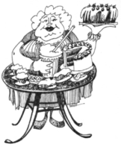

This page has usage examples for the following words:
a bad(decayed) tooth, dental caries 虫歯 むしば
a diabetic 糖尿病患者 とうにょうびょうかんじゃ
complications 合併症 がっぺいしょう
diabetes mellitus 糖尿病 とうにょうびょう
(have) a sweet tooth 甘党 あまとう
insulin インシュリン
obesity 肥満、肥満症 ひまん、ひまんしょう
weight loss 体重減少 たいじゅうげんしょう
weight gain 体重増加 たいじゅうぞうか
一般に、lose weightは「やせる」、それに対し、gain weightは「太る」と訳されます。

You have diabetes. You must watch your diet.
糖尿病なので食生活の改善が必要です。
とうにょうびょうなので しょくせいかつの かいぜんがひつようです。
Can dietary management and exercise alone cure diabetes?
食事管理と運動だけで治りますか？
しょくじかんりと うんどうだけで なおりますか？
Is diabetes a chronic disease?
これは慢性病ですか。
これは まんせいびょうですか。
My grandfather had diabetes. Will my daughter inherit it from him?
祖父が糖尿病でしたので、娘も遺伝したのでしょうか。
そふがとうにょうびょうでしたので、むすめも いでんしたのでしょうか。
What are the complications of diabetes?
糖尿病による合併症としてどんなものがありますか。
とうにょうびょうによる がっぺいしょうとして どんなものがありますか。
A conversation between a patient and a doctor about diabetes mellitus
Patient:
My husband tends to put lots of sugar into his coffee, and my daughter and I love to eat sweets. All of us are rather overweight. I worry about diabetes mellitus.
日頃、コーヒーに砂糖を入れすぎる夫。甘いものについ手が出てしまう私や娘。
一家揃ってやや肥満気味なので、糖尿病が心配です。
Doctor:
While overeating sugar and sweets does not necessarily cause diabetes mellitus, it is well known to cause obesity and caries. Recent studies show that rats that ate sugar freely had shorter lives than rats that ate limited amount of sugar. The finding is explained that excessive sugar might destroy protein and other molecules. Diabetes mellitus is a disease known for a long time. It was recorded 1500 B.C. in Egypt.
砂糖や甘いものの食べ過ぎは、必ずしも糖尿病の原因とはなりませんが、肥満、虫歯の元であることはよく知られています。最近の研究によると、砂糖を好きなだけ食べたネズミは、制限されたネズミよりも早死にするという結果が出ました。過剰な砂糖は、体内の蛋白質等の分子を破壊してしまうからであろう説明されています。糖尿病は、紀元前１５００年に、エジプトで既に記録されている程、古くから知られた病気です。
Details have been elucidated in recent, advanced studies. But it remains incurable. Diabetes mellitus is closely associated with insulin. Insulin produced in the pancreas has an important role in regulating blood sugar (glucose). When insulin is not working properly, blood sugar is elevated and discharged into urine. Insulin also plays a role in the metabolism of fat and protein. There are two types of diabetes mellitus; adult and juvenile. Both types are hereditary. As people live longer, the number of adult type diabetics is increasing rapidly. If any one of your family members has diabetes mellitus, you should consult a specialist.
最近の科学の進歩により、詳細が解明されていますが、完治できない病気であることに変わりありません。糖尿病といえばインシュリンですが、インシュリンは膵臓にあって、血中の糖（ブドウ糖＝glucose）が正常なレベルにあるように働く、大切な役目をします。インシュリンの働きが妨げられると、血糖が高くなったり、尿に出たりします。インシュリンは糖だけでなく、脂値、蛋白質の代謝にも関与します。若年型も成人型も遺伝性の病気ですが、寿命が延び、肥満の人が増加するに従い、成人型糖尿病の発生が急速に増えています。家庭に糖尿病の方がいらっしゃるならば、専門医に相談なさることをおすすめします。
My two cents 一言おせっかい
Try to avoid not only lack of exercise but excessive eating.
Everything should be done in moderation.
運動不足とともに食事の過剰摂取を避けるように心掛けましょう。
過ぎたるは及ばざるが如し。
[to01]
| © 1995-2013 NACOS International Institute. All Rights Reserved. |